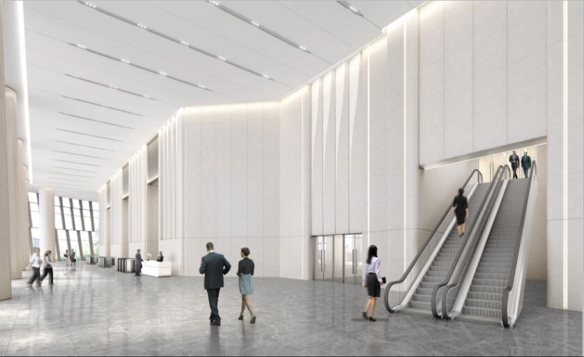
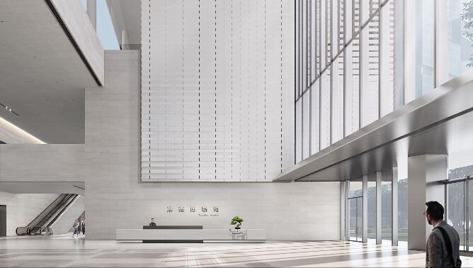
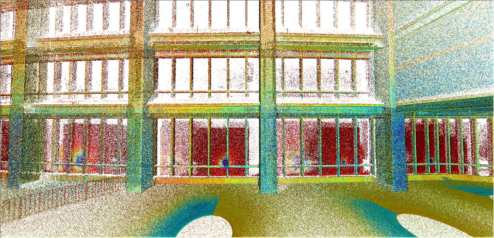
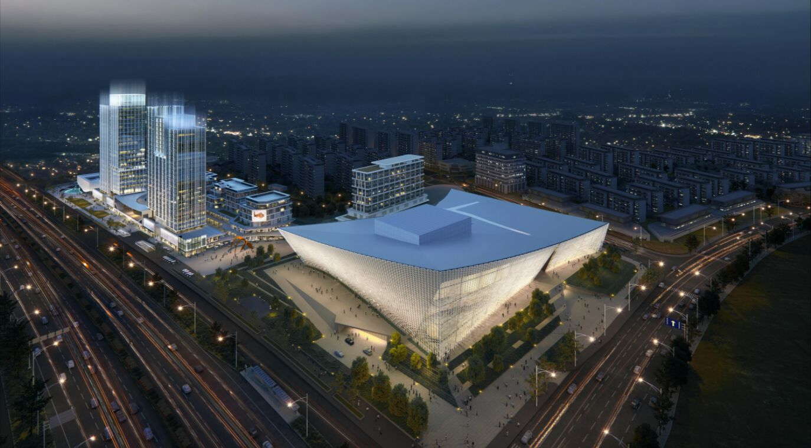

2 / SERVICES设计服务
A design studio that ships its own software 一个自研软件的设计团队
152 designers in 27 squads across Shenzhen, Shanghai, Beijing and Hangzhou, working on software we wrote ourselves. We take the scopes other teams find slow: dense fit-out, congested MEP, fast-track programmes — and because we own the tools, we can change them mid-project when your standard demands it. 152 名设计师、27 个项目组，分布在深圳、上海、北京、杭州，用我们自己写的软件干活。我们承接别人做起来慢的业务：高密度装饰深化、复杂机电、抢工期项目——工具是自己的，项目中途也能按你们的标准改。
01 Capabilities服务能力
01
Nested design嵌套设计
You already have a drawing set. We rebuild it as one coordinated model across every discipline, and the errors, omissions and clashes come out of hiding — with an owner and a date against each one. You get a baseline everybody agrees on before a single trade mobilises. 你已经有一套施工图。我们把它重建成一个全专业协同模型，错、漏、碰、缺随之浮出水面，每一条都挂上责任人和时间节点。开工之前，先拿到一份各方都认的基准。
- Full-discipline nested and detailed design全专业嵌套设计与深化设计
- Clash review, multi-party resolution, issue close-out碰撞检查、多方评审决策、问题闭环归零
- Interfaces and responsibilities defined in the model and the schedule界面与责任在模型和清单中提前界定

02
Forward design正向设计
Starting from scheme or design development, the DFC model is the source and everything else is an export: DWG drawings, the bill of quantities, the material schedule, the cutting list. Change the model and all four move together — which is what makes cost a design decision rather than an audit afterwards. 从方案或扩初开始，DFC 模型就是唯一源头，其余全部由它导出：DWG 施工图、工程量清单、物料表、下料单。改一次模型，四者同步更新——成本因此变成设计阶段的决策，而不是事后的核对。
- Forward documentation for architecture, MEP, fit-out and façade建筑、机电、装饰、幕墙施工图正向设计
- Quantities and material schedules from the same model工程量清单与物料表同源导出
- Design-management scope for the whole package设计总包服务

03
On-site detailing施工现场深化
Buildings are never built to the millimetre the drawing claims. We scan the structure as built, reconcile the model to the point cloud within 5 mm, then set out with a layout robot. That is how a fit-out reaches six-face alignment instead of being trimmed on site. 现场从来不会严格按图纸的毫米建成。我们对已建结构做点云扫描，把模型与点云校准至 5mm 以内，再用放线机器人定位。装饰能做到六面对缝，靠的是这一步，而不是到现场再裁。
- Point-cloud survey and reverse modelling点云扫描与逆向建模
- Robotic setting-out, panel layout and factory cutting files机器人放线、排版下单与工厂下料
- Resident engineers through the construction phase施工阶段驻场服务

04
Construction management施工管理服务
Drawing review, progress and quality control, variation and cost management — run against the model rather than a stack of PDFs. Available on a cost-plus-fee basis, so our margin moves with the project outcome instead of against it. 图纸审核、进度与质量管控、变更与成本管理，全部基于模型而不是一摞 PDF。可采用成本 + 酬金模式，我们的收益与项目效益挂钩，而非相反。
- Drawing audit, supplier submissions, interface pre-emption全专业图纸审核、供应商图纸整合、冲突预判
- Measured survey, three-tier programme control, hidden-works inspection实测实量复核、三级进度管控、隐蔽工程监督
- Digital cost management across the whole process工程造价数字化管理

02 How we engage合作方式
Project delivery项目交付
Fixed scope, fixed programme. We deliver the model and the documentation set to your standard. 范围与工期固定，按你们的标准交付模型与图纸成果。
Team extension团队外延
A dedicated squad working inside your process during overload periods, billed monthly. 业务过载期由专属小组进入你们的流程配合，按月计费。
Platform + enablement平台 + 能力建设
We equip your team with DFC, build your standards and libraries, and hand the work back over. 为团队部署 DFC，建立标准与族库，最终把能力交还给你们。
03 Sectors覆盖类型
- Corporate HQ & workplace总部与办公
- Tencent Shenzhen HQ (56,000 m²), ZTE Supercampus (62,966 m²), Kangtai Bio, Sany Cloud City. 腾讯深圳总部 5.6 万㎡、中兴通讯超级总部 6.3 万㎡、康泰生物大厦、三一云都研发楼。
- Civic & cultural文化与公建
- Dongguan Museum (¥1.35bn, national first-class), Poly Grand Theatre Nanchang (45,000 m², incl. stage machinery, lighting and acoustics), Hainan International Twin Centres. 东莞市博物馆（13.5 亿元，国家一级博物馆）、南昌保利大剧院 4.5 万㎡（含舞台机械、灯光、音响、声学）、海南国际双中心。
- Hospitality酒店
- Changsha Nuoya, Atour, Poly Crowned Plaza Jiangmen; Huazhu rollout tooling took a hotel from 35 design days to 15. 长沙诺雅、亚朵、江门保利皇冠假日；华住标准化工具链把单店设计从 35 天压缩到 15 天。
- Healthcare医疗
- Peking University Third Hospital regional centre (137,446 m²), Qingyuan Maternity & Child Health Centre, Shenzhen Dapeng People's Hospital. 北医三院国家区域医疗中心 13.7 万㎡、清远市妇幼保健院、深圳大鹏新区人民医院。
- Retail, F&B & rollout商业与连锁复制
- Yum China (family library and automation), KFC, HEYTEA, Moutai third-generation stores, China Resources Vanguard — standard libraries, batch output, "a store a day". 百胜中国（族库与智能化开发）、肯德基、喜茶、茅台第三代专卖店、华润万家——企业标准库、批量出图，"一天一店"。
- Residential & urban renewal住宅与城市更新
- Guangzhou Flour Mill conversion (Yuexiwan, 33,587 m²), Beijing Future Science City, Poly Tianjun Xiutai. 广州面粉厂改造·玥玺湾 33,587㎡、北京未来科技城、保利天珺秀台。